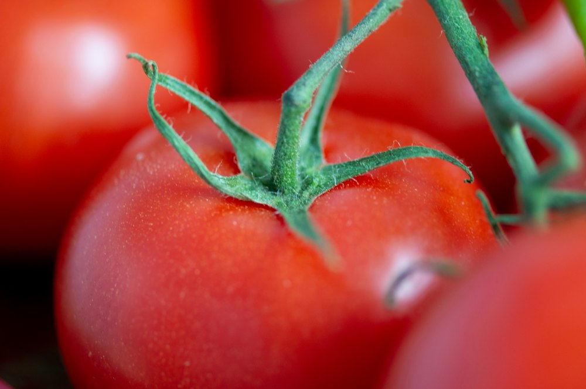

El campo no espera.
Detrás de cada producto hay tierra, agua y trabajo. Pero cuando la cosecha supera lo que se logra vender, comienza una carrera contra el tiempo.
El reto: productos perecederosDE LA TIERRA. PARA CONECTARNOS.
Conectamos los excedentes del campo con negocios que los necesitan. A tiempo. Sin dejar que lo bueno se pierda.
01 / TODO EMPIEZA EN EL CAMPO

01 · La cosechaDetrás de cada producto hay tierra, agua y trabajo. Pero cuando la cosecha supera lo que se logra vender, comienza una carrera contra el tiempo.
El reto: productos perecederosRestaurantes, comercios y procesadores necesitan producto fresco. La oportunidad está en hacer coincidir cantidad, calidad, ubicación y fecha.
La oportunidad: información a tiempoAgroMatch propone anticipar los excedentes y acercarlos a compradores. De la cosecha prevista a un nuevo destino comercial.
Explorar las cosechas02 / DEL EXCEDENTE A LA OPORTUNIDAD
Indicá producto, kilos, calidad, ubicación y fecha de disponibilidad.
Los compradores exploran los lotes que se ajustan a sus necesidades.
Acordá la compra y el retiro para darle una salida oportuna al producto.
04 / AGROMATCH VA CON VOS
La misma experiencia de compra, desde iPhone, Android o tu computadora.
Prototipo web adaptable. No requiere descargar una aplicación.
05 / QUIÉNES SOMOS
Somos AgroMatch, un proyecto universitario costarricense que busca conectar a pequeños y medianos productores con compradores comerciales. Creemos que una mejor coordinación puede abrir nuevas oportunidades para el campo.
Validar una plataforma que facilite la comercialización anticipada y contribuya a reducir las pérdidas agrícolas.
Acercar información útil de cosechas y demanda para que productores y compradores tomen mejores decisiones.
Aspiramos a una cadena agrícola costarricense más eficiente, colaborativa y consciente del valor de cada cosecha.
06 / LO QUE QUERÉS SABER
Para pequeños y medianos productores agrícolas y compradores comerciales: restaurantes, hoteles, comercios y procesadores.
Esta versión es un prototipo. Podés recorrer el catálogo, publicar lotes de prueba y simular pedidos. No hay cobros, envíos ni transacciones reales.
El modelo contempla coordinar el retiro entre productor y comprador. En el prototipo podés elegir retiro en finca y recorrer un seguimiento simulado.
El carrito, favoritos, lotes y pedidos de prueba se guardan únicamente en este navegador. No se envían a productores ni se comparten con otros dispositivos. Podés borrarlos desde el marketplace.
Por ahora se puede probar desde el navegador de iPhone y Android. Las vistas móviles muestran el recorrido propuesto; todavía no son aplicaciones publicadas en las tiendas.
SIGAMOS CULTIVANDO LA IDEA